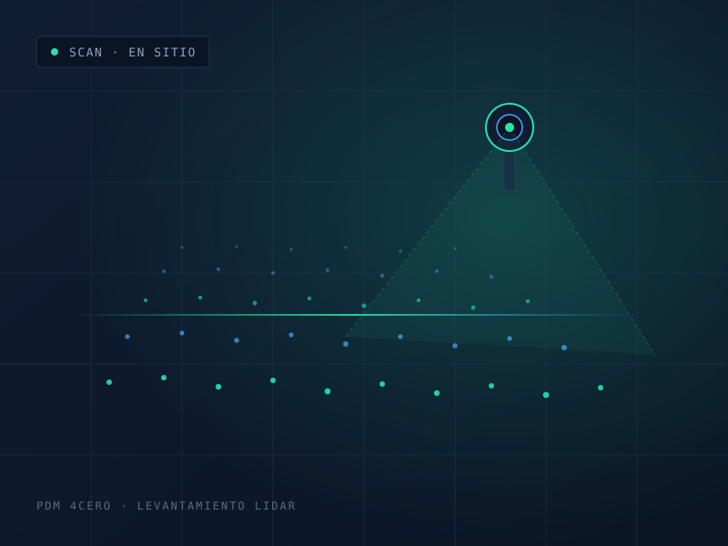

Mapeo 3D con LiDAR
Escaneo tridimensional de exteriores e interiores con nubes de puntos de alta densidad. Modelos digitales precisos incluso en zonas sin señal GPS: túneles, minas y estructuras complejas.
Ver detalle →Mapeo 3D con sensores LiDAR, mantenimiento de infraestructura médica y consultoría de proyectos tecnológicos para constructoras, universidades y gobierno.
En PDM 4Cero combinamos instrumentación de campo con análisis técnico para que organizaciones que no pueden permitirse errores tomen decisiones con evidencia. Digitalizamos estructuras complejas, sostenemos infraestructura que debe operar sin interrupción y evaluamos proyectos antes de que se conviertan en costos.
Trabajamos con el rigor que exigen las grandes constructoras, la trazabilidad que requieren las universidades y los procesos que demanda el sector público.

Cada servicio resuelve un problema concreto de medición, continuidad operativa o decisión de inversión.
Escaneo tridimensional de exteriores e interiores con nubes de puntos de alta densidad. Modelos digitales precisos incluso en zonas sin señal GPS: túneles, minas y estructuras complejas.
Ver detalle →Mantenimiento preventivo y correctivo de equipo médico, electromecánico y sistemas críticos. Prolongamos la vida útil de los activos y prevenimos fallas que detienen la operación.
Ver detalle →Diagnóstico, evaluación de riesgos y diseño de proyectos de inversión con base técnica sólida. Acompañamos a gobiernos y empresas desde la planeación hasta la ejecución.
Ver detalle →Levantamientos de obra civil, control de avance y verificación de diseño contra ejecución.
Proyectos de investigación, conservación de patrimonio y mantenimiento de laboratorios.
Evaluación de proyectos de inversión, infraestructura urbana y dependencias públicas.
Hospitales, clínicas y plantas que dependen de equipo crítico en operación continua.
Integramos la tecnología Hovermap de Emesent: escaneo móvil SLAM para entornos donde el GPS no llega. Equipo, soporte y procesamiento de datos con respaldo del fabricante.
Cuéntanos qué necesitas medir, mantener o evaluar. Te respondemos con un diagnóstico inicial y una ruta de trabajo concreta.